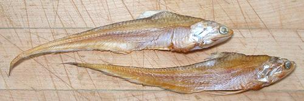

Native to the Indo-West Pacific, this is the only species of the Grenadier Anchovies (genus Coilia) that is fished commercially in the region. It ranges along the coast from Bombay, India around to Southeast Asia, and is most prolific in Indonesian waters. It is larger than normal anchovies, up to almost 8 inches long. Primarily a marine fish, it can tolerate low salinity in estuaries. These fish are called "grenadier" in common with many other fish with a similar tapered body style. It is IUCN Red Listed NE (Not Evaluated), but is not considered threatened. Photo by BEDO (Thailand) distributed under license Creative Commons Attribution-ShareAlike v4.0 International.
More on Anchovies

This photo to the left shows two dried Goldspotted Grenadiers. They are
for use as a flavoring element, just as smaller dried anchovies are. They
were eviscerated before drying, as required by U.S. import law. They were
typically 6-1/2 inches long and weighed 1/4 ounce each, product of
Myanmar (Burma). The photo specimens were purchased from a large Asian
market in Los Angeles (San Gabriel) for 2019 US $4.59 for a 4 ounce
package.